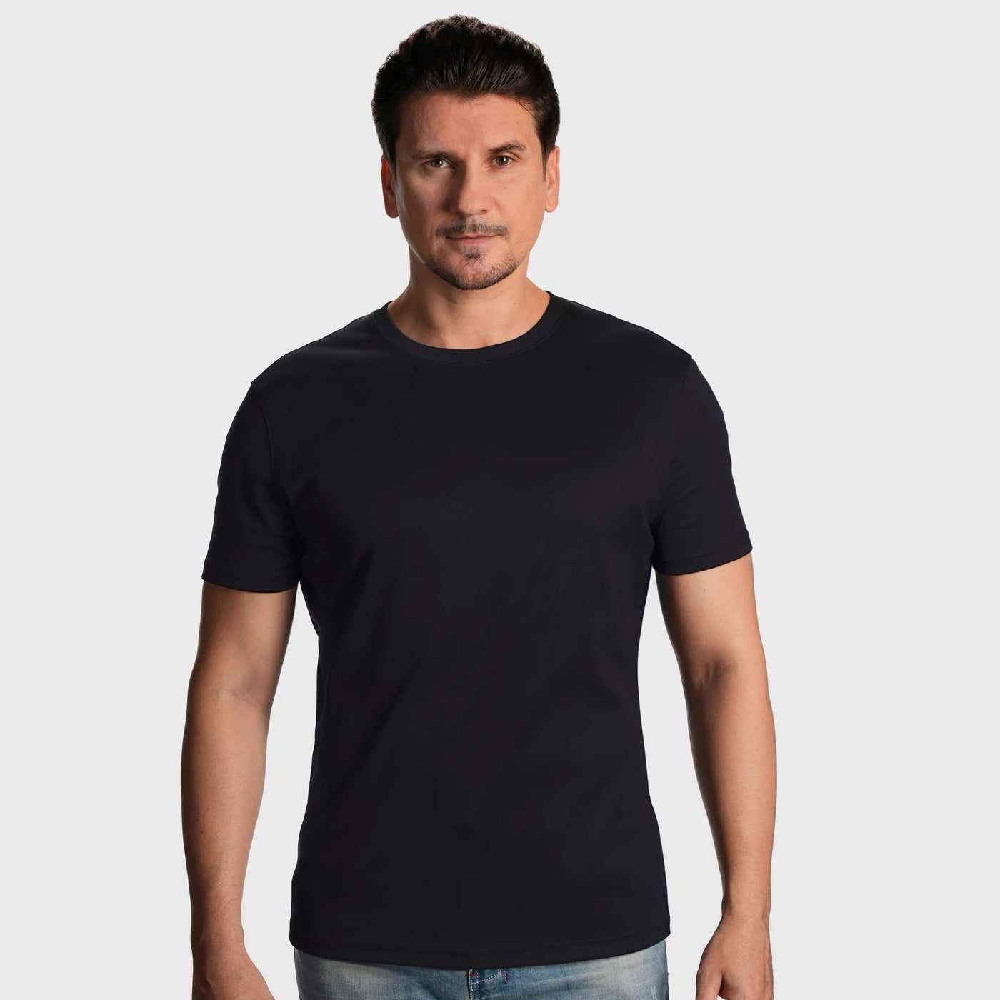
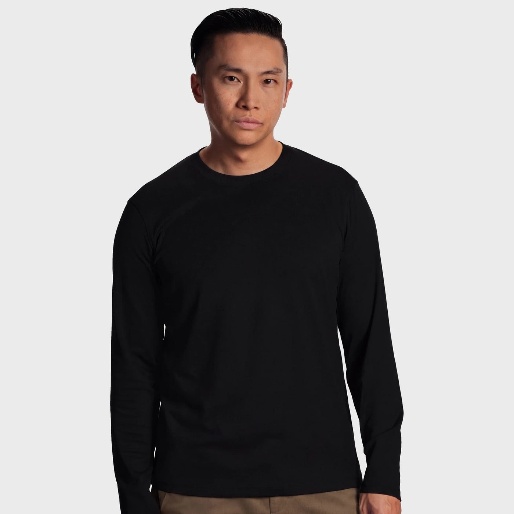
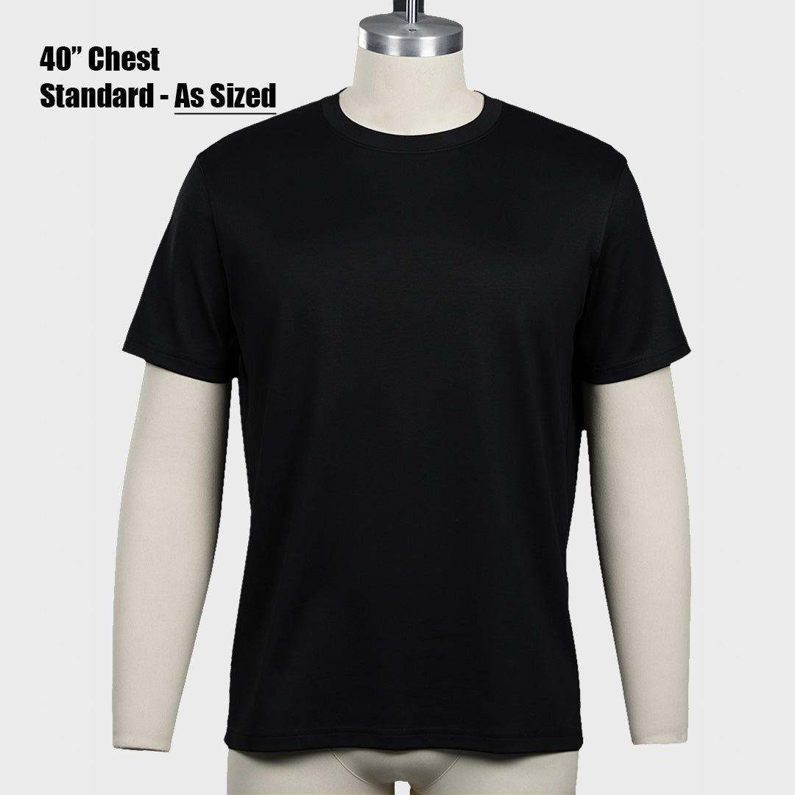
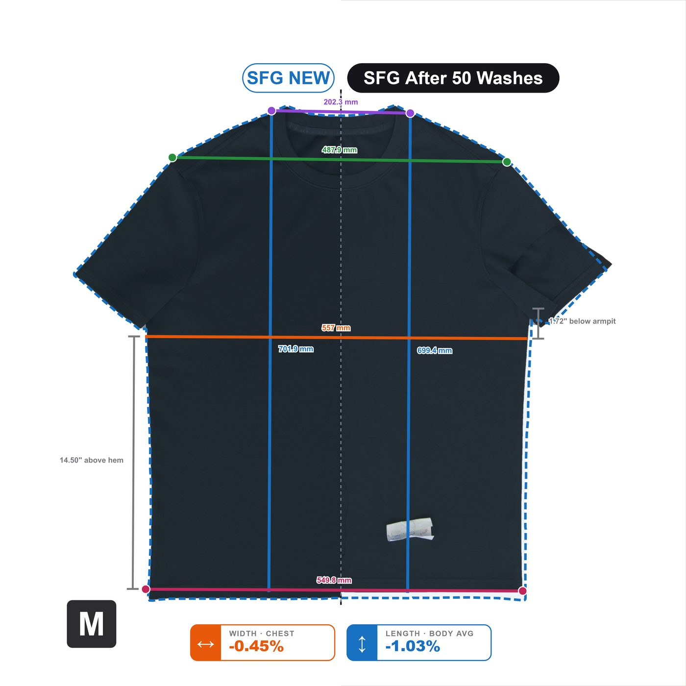
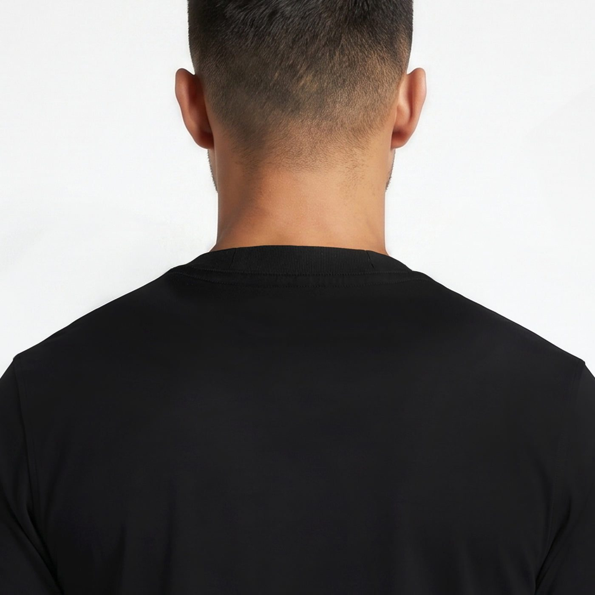
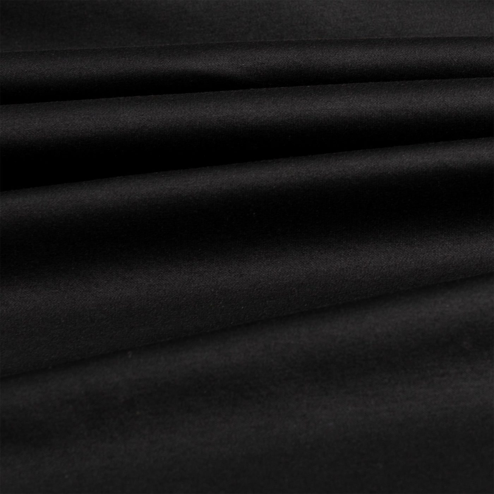
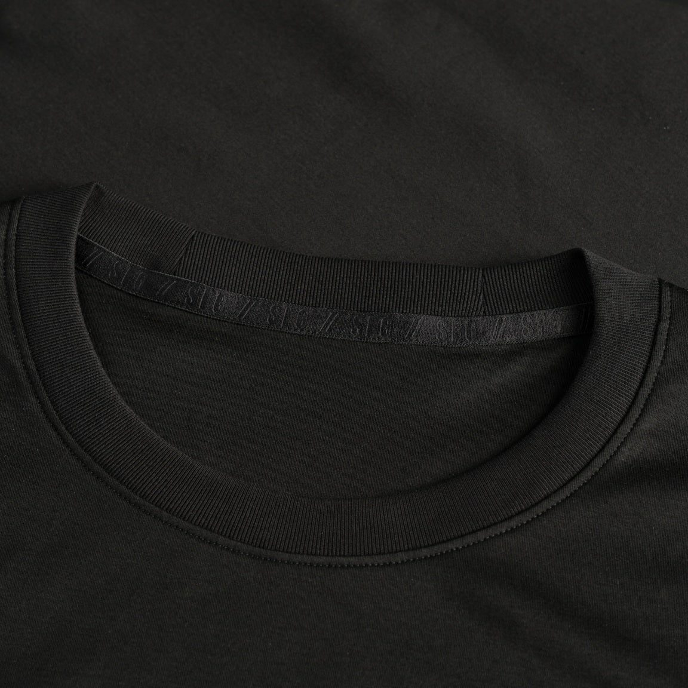

Shift Fashion Group
Company study · 2026-11-20
One garment, studied. Shift Fashion Group sells a black tee in five fits and shows it on models, on a mannequin and in close-ups of the knit, the rib collar and the back of the neck. A measured diagram of the tee after 50 washes backs the quality claim with numbers. The color story is a single black; the surface and the seam are the story.


(01)

(02)

(03)

(04)

(05)

(06)

(07)Palette · measured from images
#282726#1F1F1E#191919#111112#040404Visual themes
- One black
- Key motifs: a single black tee, five fits, the same studio ground. Sub motifs: no logo, no print, no color options.
- Fit on the body and the form
- Key motifs: athletic fit and classic long sleeve on models, the standard fit on a mannequin with chest size labeled. Sub motifs: sleeve length, drape.
- Seam and surface
- Key motifs: knit close-up, rib collar, taped neck seam, back of the neck. Sub motifs: soft folds, matte black.
- Tested quality
- Key motifs: a measurement diagram of the tee after 50 washes, with shrinkage figures. Sub motifs: labeled chest and length lines.
Color palette
- Fold highlight #282726
- The lightest tone, where the knit catches light on a fold.
- Tee black #1f1f1e
- The garment, in every fit.
- Soft black #191919
- The body of the shirt in the back and mannequin views.
- Deep black #111112
- Fabric in shade, under the collar and in folds.
- Seam shadow #040404
- The darkest point, in the neck seam and the deepest folds.
Visual elements
- Photography
- One model per image or a mannequin, front view, even light, light gray seamless ground, with macro close-ups of fabric and collar.
- Type and graphics
- A heavy white wordmark SHIFT on black; small spec labels on product images.
- Layout habits
- A short site: home, the shirt page, a spec page, a members lab page.
Notable products
The Black T-Shirt. Sold in Classic, Slim, Athletic, Classic Long Sleeve and Scoop Bottom fits.
Method and limits
- Palette basis
- measured on the garment only: the fabric close-up, the collar close-up, and crops of the shirt from the back view and the mannequin view; k-means with five clusters. Studio ground, skin and hair are left out, so every swatch is a tone of the black tee.
- Limits
- Pages read 2026-11-20 and 2026-11-23, plain HTTP fetch, no login: https://shiftfashiongroup.com/ , /collections/all and /products/the-black-t-shirt. Images are the shop’s own at width 1400 of the same file. Fabric content, the 50-wash figures and the site’s process claims are the brand’s own statements and are not tested here. The five swatches sit within a narrow dark range and are hard to tell apart on a screen.
Credits and licenses
(01) Athletic-fit black tee on a model, front view, light gray ground. Shift Fashion Group. Brand image, study use. source
(02) Classic long-sleeve black tee, front view. Shift Fashion Group. Brand image, study use. source
(03) Standard-fit black tee on a mannequin, front view, with the chest size and fit labeled. Shift Fashion Group. Brand image, study use. source
(04) Measurement diagram of the tee after 50 washes, with shrinkage figures at the chest and length. Shift Fashion Group. Brand image, study use. source
(05) Back of the neck and shoulders in a black crew-neck tee. Shift Fashion Group. Brand image, study use. source
(06) Close-up of black knit fabric with soft diagonal folds. Shift Fashion Group. Brand image, study use. source
(07) Close-up of a black rib collar with a taped neck seam. Shift Fashion Group. Brand image, study use. source